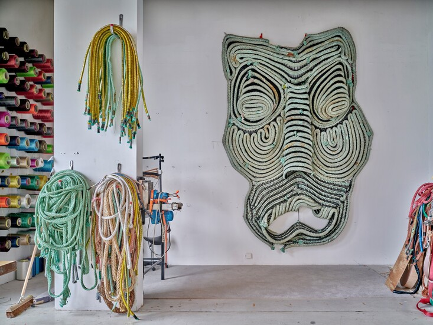
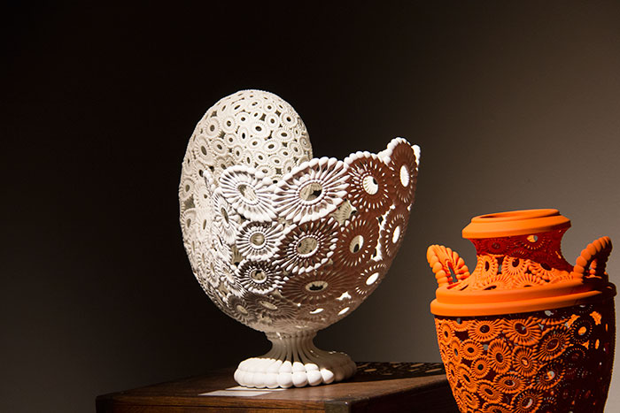
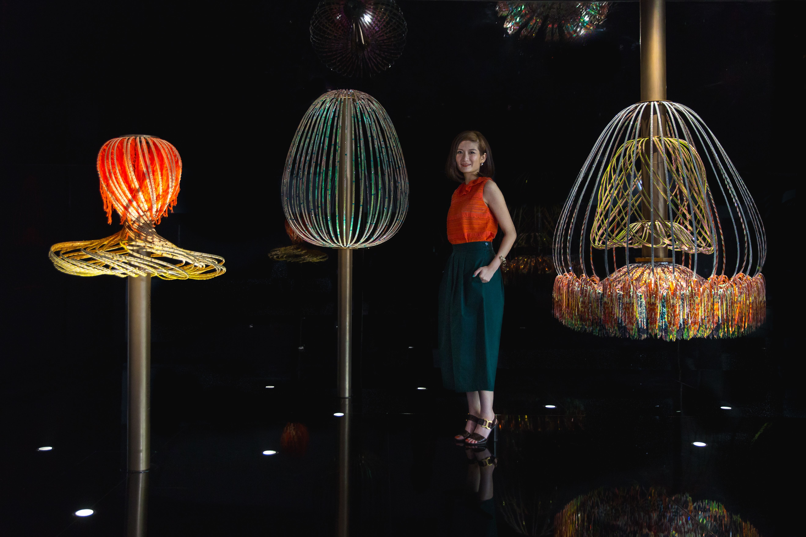
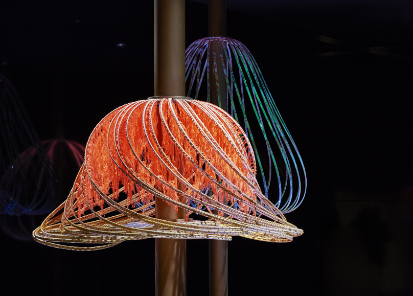
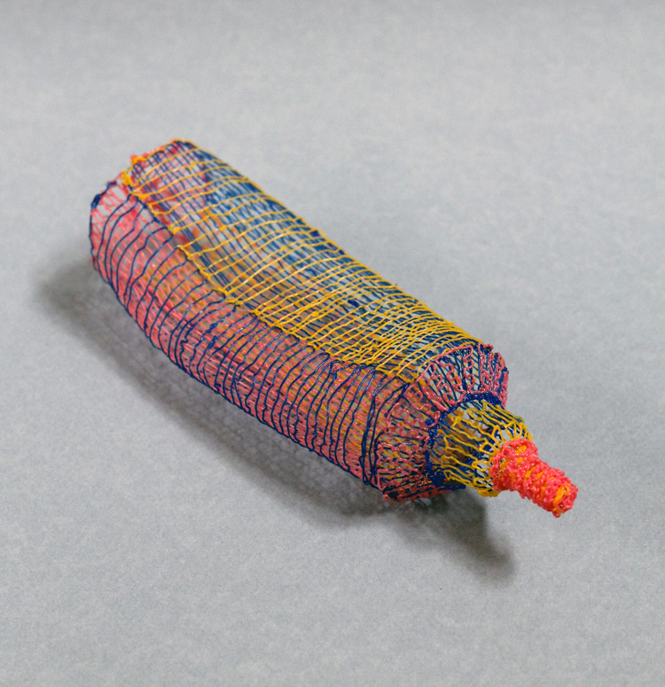
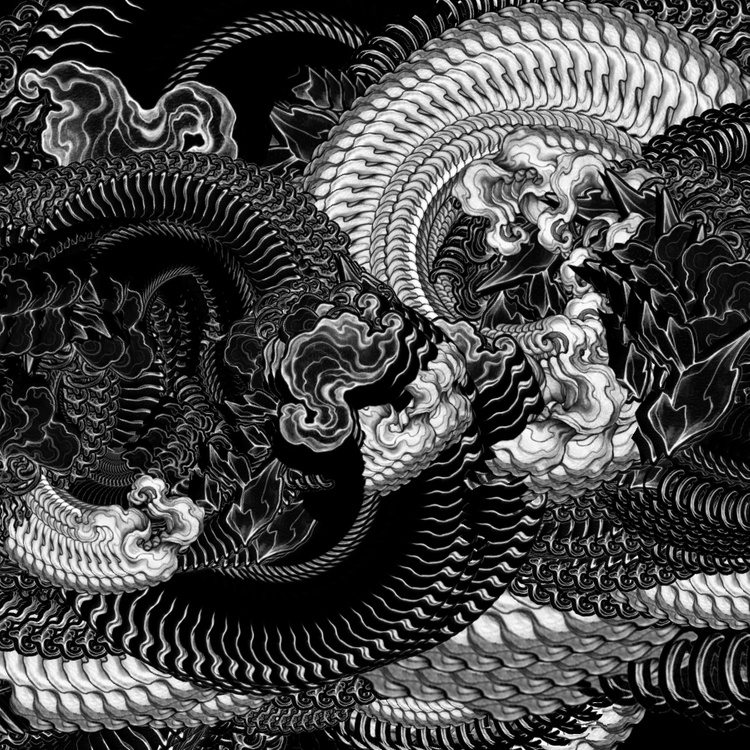
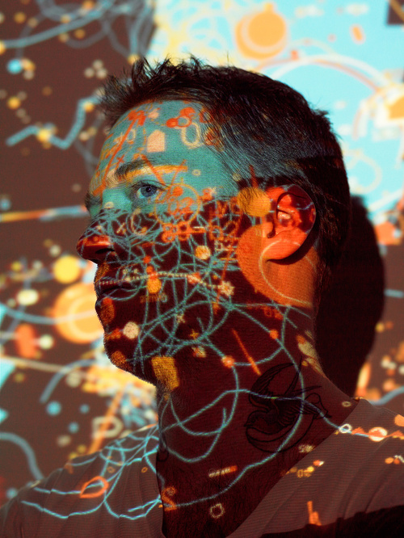

Navigating the Intersection of Craftsmanship and Digital Design
by Amber de Ronde
Research Question
How do designers like Michael Eden and Elaine Yan Ling NG integrate traditional craft techniques with digital design technologies in shaping the evolving landscape of contemporary design? Furthermore, how do these methods diverge among artists such as Job Wouters (Letman) and Joana Schneider, who exclusively utilize craft practices, those like Daan Veerman, who blend craft with digital design, and those such as Joshua Davis, who rely solely on digital design techniques?
Abstract
Through a combination of analog craftsmanship and digital technologies, my thesis investigates how traditional techniques can be seamlessly integrated into a contemporary design process. It explores the creative possibilities of analog and digital design. All about old & new, and my personal connection to the craft and tech blend.
The research question talks about the evolving relationship between traditional crafts, digital design, and artistic expression in contemporary design practices.
The methods used employs approaches, including museum visits, reading related publications, utilizing library and online search programs, reviewing previous works, and engaging with documentaries and articles that resonate with the overarching theme. The books Digital Handmade: Craftsmanship and the New Industrial Revolution by Lucy Johnston, Textile visionaries: Innovation and sustainability in textile design by Bradley Quinn, can give me new insights in this topic.
I research various artists to understand how they use traditional craft and digital tools. Some artists seamlessly blend these methods, while others focus solely on one approach. By studying artists like Elaine Yan Ling Ng, who combine traditional textile techniques with digital methods, alongside those who stick to age-old traditions without digital help, and digital artists like Josuah Davis, who explore new ways of creating with technology, I gain a better understanding of the different ways craft and digital art intersect.
Various articles on Digital Craftsmanship and Traditional Craftsmanship cover topics such as the rise of digital art, the integration of technology in artistic expression, and the appeal of traditional craftsmanship in the digital age. They offer me perspectives on the evolving relationship between digital technologies and traditional craft practices, highlighting both the challenges and opportunities presented by technological advancements.
Throughout my research, I discovered numerous applications of digital technologies in conjunction with craft, and how artists both share many similarities and differ in various aspects. The medium and focus of the artists vary greatly, with some primarily focusing on textile and material design, calligraphy and lettering work, ceramics and graphic design and digital art. Their chosen mediums and areas of focus vary significantly.
Each artist has a distinct artistic style and aesthetic preferences that shape their work. Their backgrounds and training in art and design also differ. Ng may have a background in textile arts, while Wouters may have honed his skills through calligraphy and lettering practices, and Davis may have a foundation in graphic design or programming.
Despite these differences, all artists desribed in my thesis exemplify the ways in which digital technologies can intersect with traditional craftsmanship to produce innovative and visually stunning artworks.
In today’s rapidly evolving landscape of art and design, the integration of traditional craftsmanship with digital technologies has emerged as a fascinating area of exploration. This convergence presents a myriad of possibilities for designers and artisans, blurring the boundaries between the tangible and the digital.
In this exploration I bring a personal passion for the merger of analog and digital worlds. Inspired by the tactile satisfaction of traditional crafts such as weaving, I find peace and creativity in the thorough process of creation. This love for handmade creations, combined with an enthusiasm for digital innovation, drives my experimentation with creative coding, programming and the integration of digital technologies into traditional craft processes.
This fascination with artisanal creations and digital innovation has led me to investigate the evolution of craftsmanship and the role of digital technologies within modern craft practices. How craft evolves in the digital age and how contemporary artisans integrate digital technologies such as additive manufacturing with traditional craft practices are questions that intrigue me.
Within this research, I also focus on the motivations behind artisans’ adoption of digital manufacturing technologies alongside traditional craft processes. While some artisans are driven by the pursuit of efficiency and precision, others are captivated by the boundless creative freedom offered by digital mediums. However, amidst the digital revolution, there is a notable resurgence in the appreciation for the tactile satisfaction and sensory richness of handmade creations. This renewed reverence for traditional craftsmanship prompts artists and designers to reevaluate their relationship with technology and handmade techniques.
Furthermore, I look in to into the reasons behind choosing digital art creation over traditional crafts practices. What are the considerations that lead to this choice or shape this decision, and what impact does this have on artistic expression and the creative process?
The main goal of this research is to gain insight into how designers integrate traditional crafts and digital design technologies into their work, and what different approaches exist within a selection of artists ranging from exclusively artisanal to fully digital.
Chapter 1
How is craftmanship evolving?
Craftsmanship, traditionally defined as the skill and quality of workmanship in creating handmade objects, has evolved significantly over time, particularly in the context of the modern and digital age. In earlier times, craftsmanship was characterized by meticulous attention to detail, mastery of traditional techniques, and a deep understanding of materials. Craftsmen honed their skills through years of apprenticeship, passing down knowledge from one generation to the next. Objects created through craftsmanship were often valued for their uniqueness, quality, and the human touch evident in their creation.
Richard Sennett, an NYU professor of economics, defines craft as a deeply human endeavor where practitioners are deeply invested in the outcome and take care to do excellent work. This perspective is crucial in evaluating how the digital changes the connotations of the artwork. Sennett’s view aligns with my conviction that craftsmanship encompasses not only the final product but also the process of creation. Crafting is a form of self-realization and a fundamental expression of human identity. I create, therefore I am. Working with your hands is therapeutic, contributing to relaxation and enhancing self-esteem by discovering and honing personal skills.
The arts and craft movement exemplifies our evolving perception of craftsmanship. In today’s globalized landscape, standardized products dominate, from chain coffee shops to fast-fashion giants. This uniformity prompts a quest for unique, handcrafted items that convey authenticity and individuality. Furthermore, rapid technological progress and digitalization have estranged us from tangible experiences. As screen time increases, there’s a rising desire for the tactile gratification provided by handmade goods. This longing for authenticity fuels the revival of traditional craftsmanship across diverse sectors.
The impact of media, modern art, trends, and the internet on creative work has transformed traditional craftsmanship and introduced new forms of artistic expression. In the digital age, craftsmanship has evolved to incorporate mechanization and automation, enhancing traditional techniques. Moreover, the internet has revolutionized the distribution of craft products, making them accessible to a wider audience.
For designers who still exclusively work with craftsmanship, the modern era offers new opportunities to practice their craft and give a contemporary twist to traditional crafts. While they remain faithful to the principles of craftsmanship, they draw inspiration from both the past and the contemporary digital world.
These modern artisans draw from a rich tradition of craft techniques and materials, yet they are not afraid to experiment and explore new paths. They leverage the potential of digital technologies such as social media, online platforms, and digital marketing to promote their craft creations and reach a broader audience.
Furthermore, they sometimes integrate digital tools into their craft process, albeit in a more subtle manner. This can range from using digital design software to create patterns or templates to leveraging online communities for sharing knowledge and inspiration. Through this hybrid approach, they can combine the best of both worlds: the authenticity and craftsmanship of artisanal creations with the innovation and connectivity of the digital world.
Calligraphy serves as a striking example of this evolution. With the rise of digital technology, the art of good writing is declining. However, contemporary calligraphers are defying this trend and producing modern and expressive work that goes beyond traditional Gothic styles. This continuous development is emphasized by Baukje Scheppink in the book “Gouden Handen”.
Modern practitioners, such as Job Wouters (Letman), embody the fusion of traditional craftsmanship and modern influences. An advocate of the lost art of psychedelic handwriting, Wouters displays a meticulously honed technique beneath a canvas of untamed experimentation with the alphabet. Although calligraphy is undergoing changes with the rise of digital technologies and the decreasing emphasis on good writing, artists like Wouters are adapting and creating work that is both modern and expressive.
One notable instance where Wouters shares his insights is during a lecture as part of the ‘Insights 2013 Design Lecture Series’ at the Walker Art Center. He shares his experience from a dogmatic commitment to analogue methods to a more pragmatic approach, recognizing the value of digital technology. This pragmatic attitude is visible in his willingness to integrate digital tools, such as rewriting and scanning a letter in a flyer after discovering a spelling error. Previously he would have completely rewritten the text. This pragmatic approach reflects the continued evolution of crafts and their ability to adapt to modern times.
This lecture proved enlightening and enjoyable, offering a glimpse into how he sources inspiration online and translates it into his creative process. It was a valuable experience, highlighting the intersection of tradition and innovation in contemporary craftsmanship.
Another beautiful example of the modernity of old crafts that I would like to tell you about is the work of Joana Schneider. Joana Schneider graduated as a textile designer from the KABK in 2018. She learned unique knotting and weaving techniques from fishermen and craftsmen in Scheveningen and Katwijk, which she then combines with more contemporary techniques and crafts to create beautiful textile works using recycled heavy, coarse fishing ropes. She connects their knotting techniques with traditional carpet making. Craftsmanship is central to Schneider’s work, as she wants to express her appreciation for craftsmen who still work with their hands in these digital times.
She said in an interview with Gallery Viewer: “From an artist’s perspective, I would like to mention that I am one of the lucky few who have the opportunity to work in a predominantly non-digital world in our digital age. The artistic means I have chosen are a form of appreciation for people who still work with their hands.”
Joana Schneider - Totem Raufen
By embracing both tradition and innovation, designers like Job Wouters and Joana Schneider demonstrate how craftsmanship continues to thrive in the modern world, enriched by the possibilities offered by digital technologies.
Although these designers maintain traditional craftsmanship, they also embrace the opportunities and influences of the digital age. They strike a balance between the past and the present, preserving the essence of craft while also adapting to some extent to the modern world.
Overall, while the essence of craftmanship remains rooted in tradition and skill, the digital age has expanded the boundaries of what is possible, leading to new forms of expression and innovation in the world of craft.
When I moved to Hamburg for a few months, I lived in an apartment with my roommate Khaled.
On one weekend, despite the rain, Khaled and I decided to go mushroom gathering in the forests.
Amber
We drove beyond the landscapes of the city
, trading asphalt for wet grass. It was a very cold, rainy day, and we were covered in warm sweaters, rain jackets and rubber boots.
I can still feel the raindrops on my cheek and the sound of the boots in the mud, searching for fungi.
Finding them was tough. Only after an hour, we stumbled across a porcino mushroom
[1][1] One of the most widely consumed wild mushrooms that grows during autumn mostly in North America and Europe and is known for its rich earthy and nutty flavor (22).
"Immortality." Cambridge Dictionary, dictionary.cambridge.org/dictionary/english/immortality. Accessed 26 Dec. 2022.
and soon our basket was filled with treasures, creating an unspoken sense of bliss. Back home, Khaled prepared the mushrooms.
He was more experienced in mushroom gathering,
so I trusted him with it
. I’m convinced that getting to know a person through food is one of the most intimate ways to connect with someone.
In a way, preparing and eating a dish created a collective responsibility and a sense of care.
Chapter 2
How do contemporary artisans integrate additive manufacturing technologies with traditional craft practices?
The constant interaction with digital technologies, the exposure to different craft techniques through media and the integration of modern art concepts are asking artisans to re-evaluate their approaches. This rethinking involves challenging traditional norms, experimenting with new materials and methods, and embracing a more dynamic and adaptable mindset. In light of these influences, artisans today approach traditional craftsmanship with a fresh perspective. They integrate digital tools for design, draw inspiration from diverse sources and experiment with unconventional materials. The aim is to keep traditional crafts relevant in contemporary contexts, while embracing innovation and creativity.
Various designers dedicate their studio and research to deepening the available knowledge surrounding craft. In this way, crafts and processes remain intact. One notable technological advancement that has revolutionized the artistic world is additive manufacturing. If I delve deeper into the realm of additive manufacturing, I uncover a realm of endless possibilities, where imagination knows no bounds and traditional craftsmanship finds new expression in the digital age.
Additive manufacturing, often referred to as 3D printing, is a process of creating three-dimensional objects layer by layer from a digital model. Unlike traditional manufacturing methods that involve subtracting material through machining or molding, additive manufacturing builds an object layer by layer, adding material where needed.
During my interior design studies, I already used 3D printers a lot. They were indispensable in creating mock-ups and scale models for my projects. At the time, the use of a 3D printer was largely focused on practical applications within my studies. Originally, 3D printers were mainly developed for industrial applications, such as the fast and efficient production of prototypes and parts for machines. This technology was especially popular in industries such as engineering and product development, where precision and speed were crucial. We were taught how to use this advanced technology to bring our designs to life, and during my studies I looked further into the possibilities of the 3D printer within the profession of interior design. The use of 3D printers in the artistic world was relatively limited at the time and was mainly seen as an interesting but not yet fully exploited possibility.
However, as technology continued to evolve and costs for 3D printers fell, artists and designers began to discover their potential for creative expression. I saw this happen so much when I started at art school and the ability to create three-dimensional objects using digital designs opened new doors for artistic exploration and experimentation. Artists began using 3D printers to produce unique sculptures, installations, and other works of art that were previously difficult to create using traditional methods.
Today, the 3D printer has become an integral part of the design and art world. What started as a handy prototyping tool has now evolved into a powerful creative tool that pushes boundaries and opens up new possibilities for designers and artists. The use of 3D printers has evolved from purely functional to artistic and expressive.
I therefore find it very fascinating to see the evolution of the applications of the 3D printer, both during my time studying interior design and at art school now. While at the time I was mainly focused on using the 3D printer as a practical tool to realize my designs, I now see a wide range of creative and artistic applications. At art school, the 3D printer is not only seen as a means to produce physical objects, but also as an artistic tool in itself. The 3D printer opens the door to new forms of expression and offers artists the freedom to give free rein to their imagination.
What I find particularly remarkable is the diversity of approaches that artists take when using the 3D printer. Some use it as a means to create complex geometric shapes, while others use it for organic and sculptural designs. This variety of creative expression shows how versatile and promising the possibilities of the 3D printer are within the contemporary art world.
A great example of a designer who combines craft with additive manufacturing is Michael Eden. He is a British designer, had practiced as a traditional craft potter for over twenty years before discovering additive manufacturing.
He specialised in creating traditional slip-decorated earthenware, such as vases, using clay and ceramic. Eden has highlighted that he is no longer restricted to what he can do with his designs, stating, “I realized these technologies had the potential to free my creative process from the constraints of design for manufacture”.
By combining both traditional and digital designing processes, Eden was able to create a fresh style of work. No longer restricted by what traditional machines and materials could do, additive manufacturing has allowed him to experiment with designs and materials, providing him with the freedom to express his true artistic styles.
Michael Eden’s exploration of technology began with a fascination for the potential of computers, sparked when he was given an Amstrad in the early 90s. As he learned to write HTML, a new realm of creative thinking opened up in his mind. The pivotal moment came when he discovered ‘rapid prototyping,’ recognizing its almost limitless potential. This marked a significant turning point in Eden’s journey, where his early exposure to computers evolved into a profound appreciation for the innovative possibilities offered by emerging technologies like rapid prototyping.
During a Q&A session with art students, (that he shares on his website hoping that the answers help to give an insight into the thinking underpinning his practice), a particularly intriguing question arose from the audience: Coming originally from a more traditional craft/maker background, was there any hesitation when opting to produce work digitally (i.e. the possibility of risking harming the artistic integrity of your work)?
Where Michael Eden answered: “None whatsoever! I firmly believe that ideas lead the way and that tools of one form or another need to be utilised in order to realise the idea as a tangible object. There is a misconception that the ability to engage with new technologies doesn’t require a similar development of skills to that of learning any other craft. I heavily rely on my previous experience of making by hand and firmly believe that knowledge of materials and processes is fundamental to the creation of meaningful objects.”
I came across Eden’s work while researching for my thesis, and I was fascinated by the unique combination he brings to his creations. What particularly intrigued me was his innovative use of ceramic material in additive manufacturing processes. This approach adds a whole new dimension to traditional ceramics. Let me delve a bit deeper into how his work comes to life.
Michael Eden - Nautilus 2 2018
Eden begins by conceptualizing his designs, drawing inspiration from a variety of sources, including historical art movements, nature, and industrial design. He uses digital design software such as CAD (Computer-Aided Design) programs to create intricate and complex forms. He uses advanced 3D printers capable of printing with ceramic materials, allowing him to create intricate and sculptural pieces layer by layer as you can see in his work. After printing, the objects undergo post-processing steps to refine their appearance and texture. This could involve sanding, glazing, or additional surface treatments to achieve the desired aesthetic quality.
Michael Eden isn’t the only creative mind to experiment and incorporate additive manufacturing into his design process. They are used by artists from various disciplines, including sculpture, painting, fashion, and architecture, to push boundaries and explore new forms of creativity. AM has given the designers the opportunity to explore, to experiment and to create their ideas in a way they had never thought possible.
Craft versus the digital
The rise of digital production methods in artisanal ceramics has faced resistance from the community, with some viewing it as a threat to traditional methods. Eden encountered resistance among artisans who saw his work as a threat to the traditional approach. They were reluctant to embrace the new technologies, preferring the traditional method of manually turning the potter’s wheel.
In addressing concerns about the impact of advancing ceramic printing technologies on traditional clay methods, Michael Eden offers a nuanced perspective. He asserts that while digital tools like Rhino 3D and SLS enable innovative approaches to ceramic design, they do not diminish the
significance of traditional craftsmanship.
For instance, when crafting a cup and saucer, Eden emphasizes the irreplaceable qualities achieved through manual throwing on a wheel. This acknowledgment underscores the enduring value of traditional techniques alongside modern advancements. By recognizing the coexistence of both approaches, Eden highlights the dynamic interplay between traditional and contemporary practices within the realm of ceramic art.
I think it is beautiful how Eden said (in a Q&A session with art students): “It is not about replacing traditional methods, but about complementing them.”
In addition to Michael Eden, artists such as Neri Oxman, Iris van Herpen and Joris Laarman have also faced criticism or resistance from traditional craft communities due to their use of digital technologies in combination with craft practices.
Neri Oxman’s "Aguahoja Pavilion," on display in the MIT Media Lab lobby, is made out of biopolymer composites—the organic matter found in natural sources like shrimp shells, insect exoskeletons, and leaves—3D printed from water-based molecules; Courtesy of the Mediated Matter Group.
Neri Oxman
, a renowned designer and scientist, is known for her innovative work in architecture and design, combining digital fabrication techniques with organic forms inspired by nature. However, her work has faced criticism for its authenticity and not aligning with traditional artisanal practices.
Julia van Herpen - Sensory Seas.
For this collection, Iris van Herpen draws inspiration from the sensory processes that occur between the intricate composition of the human body, mirrored with the fibrous marine ecology of our oceans
Iris van Herpen
, a fashion designer, known for her avant-garde approach to fashion, uses 3D printing and other digital manufacturing techniques to create unique garments. Despite her praise, critics question whether her work meets traditional standards of craftsmanship in the industry.
Joris Laarman Lab - Bone Chair, 2006
Joris Laarman
, a designer known for his experiments with digital fabrication techniques, is criticized for his overreliance on machinery and digital processes, raising questions about the role of the human hand and traditional craftsmanship in his designs.
I can understand why some people within traditional craft communities may show reluctance towards the use of digital technologies. This could be due to various reasons. One reason already mentioned is the desire to preserve tradition. Many artisans value the traditional methods and techniques passed down through generations. They may see digital technologies as a threat to these traditions. Additionally, there may be a fear of change. Change often elicits resistance, especially when it involves new technologies that shift how things are done. Some artisans may be concerned that embracing digital technologies will undermine their craftsmanship.
It’s important to note that, digital technologies complement traditional craft practices, as Michael Eden has previously stated. Many contemporary artisans find ways to integrate digital tools into their work while still upholding the core principles of craftsmanship and authenticity.
Craft is also increasingly applied because traditional craftsmanship stands out as a more sustainable and ethical choice. Craftsmen typically work with locally sourced, natural materials and employ low-energy production methods, reducing the carbon footprint of their products. Additionally, the emphasis on handmade production means ensuring fair wages and better working conditions for artisans.
Traditional craftsmanship startups offer educational and cultural exchange through workshops and apprenticeships, ensuring the preservation of traditional techniques and promoting cultural diversity. Additionally, these startups may collaborate with local communities, promoting cultural diversity and fostering a deeper understanding and appreciation of different craft traditions.
In a digital age where everything seems to be automated and impersonal, traditional craftsmanship provides a vital antidote. It attracts those who value quality, authenticity, and a link to heritage. The resurgence of traditional craftsmanship startups reflects a desire for products that blend beauty with sustainability, customization, and emotional significance.
Chapter 3
What motivates artisans to adopt digital fabrication technologies alongside traditional craft processes?
The rise of digital fabrication technologies has brought about a remarkable shift in production processes across various industries, including art, design, engineering, and manufacturing. These technologies encompass a wide range of innovative tools and techniques, such as 3D printing, laser cutting, digital embroidery machines, cnc machines and many more.
Digital fabrication is the process of creating physical objects directly from digital files. This process involves using computer-controlled machines to create objects, rather than traditional manufacturing techniques such as casting or forging. It is also the overarching theme of Additive Manufacturing and Subtractive Manufacturing.
Over the past several decades, the transition from analogue to digital has revolutionized many fields, most notably computing and social media. But digital technology is also starting to define an evolution in the way we manufacture, distribute and recycle products. Inspired by emerging industrial manufacturing methods in the early twentieth century, modernist pioneers valued and changed the aesthetics of design. Now, the new realm of digital fabrication is shifting our current notion of design and pushing artists to explore the endless new possibilities of digital manufacturing.
What motivates artisans to embrace digital fabrication alongside traditional craft processes? For me, it was primarily curiosity that sparked my interest and prompted me to experiment. What was I curious about? Well, within the textile workshop, my curiosity led me to initially focus solely on traditional craft techniques, alongside my digital work, which I often blend together. I soon found myself exploring how coding intersects with weaving and how it can facilitate the faster development of patterns. And how sublimationprint works on different materials and experimenting with engraving on textile.
Essentially, I was driven by a desire to discover, experiment, and above all, learn. This curiosity, shared by many artists, stems from a yearning to explore new frontiers, challenge limits, and uncover the vast potential of emerging technologies. Moreover, these technologies offer the freedom to tackle more complex tasks efficiently and faster than with manual methods.
Digital fabrication technologies offer endless and exciting possibilities for creativity and innovation. By combining digital design tools with traditional craft skills, artists can embark on journeys of self-expression, creating unique and experimental pieces that challenge conventional norms. This blend of techniques expands what is considered traditional and inspires fresh, inventive works that reflect individuality.
Another motivating factor is the accessibility to new materials and methods provided by digital fabrication technologies propels artisans into unexplored territories. For example, advanced 3D printing materials unlock opportunities for crafting intricate and imaginative objects previously considered unattainable. This influx of innovation not only encourages experimentation but also enhances skills, inspiring artisans to create groundbreaking artworks that redefine the boundaries of creativity.
During the research for my thesis, I also came across the remarkable work of Elaine Yan Ling NG. With my interest in weaving, I couldn’t overlook her work. Although I was already familiar with her work, I saw this as a perfect opportunity to delve deeper into her artistic creations.
Elaine Yan Ling Ng, was trained as a weaver and is a renowned artist and designer, known for her innovative approach to textile and material design. With a background in textile art and a passion for experimentation, she has gained international recognition for her creative explorations at the intersection of traditional craft techniques and digital fabrication technologies. Ng’s inquisitiveness about digital technologies, such as laser cutting and digital embroidery, has driven her to blend these techniques with traditional craft processes, creating captivating and groundbreaking textile designs.
In addition, I would like to highlight her interactive work ‘Sundew’. Her unique approach to design, encompassing textiles, electronics, biomimicry and interiors to create a highly interactive presentation. Taking inspiration from nature, craft and technology, Ng has created interactive objects that mimic the exotic ‘Sundew’, a carnivorous plant that attracts its prey with scent and reflected light. The installation features hand-fabricated textiles combining natural fibers and 316m of Swarovski crystal fabric (approximately 20 million crystals), and lures audiences in, trapping them with mesmerising displays of light, fragrance and movement. By incorporating sound, the artwork gains interactivity, guiding the movement of the textiles. Unfortunately, I haven’t had the opportunity to admire her work in person, but I find the interaction with the viewer fascinating!
Elaine Yan Ling NG - Sundew for Swarovski
Elaine Yan Ling NG - Sundew for Swarovski
Within weaving, the possibilities are endless. In addition to her stunning work “Sundew,” she has created a magnificent woven rug that adapts its color based on different seasons, temperatures, and lighting conditions by using light reflectives yarn. What I truly admire about her work is how she utilizes various mediums and continuously explores how materials interact with each other and their surroundings.
It is beautiful how she says in an interview with Art Power HK: HK Artist Spotlight Series: “Weaving is an old heritage craft, so a lot of people misunderstood the value of the weaving. It takes so long to handweave textiles. Heritage craft is where we build the knowlodge of making.”
Digital fabrication plays a crucial role in various aspects of Ng’s design and production process. This includes using digital design software to create intricate patterns and structures, as well as employing advanced fabrication technologies or computer-controlled machines to produce final textile elements. These techniques ensure precision, repeatability, and complexity.
Additionally, digital fabrication is integral to material selection and experimentation. Through digital simulations and prototyping, Ng can explore different materials and textures, gaining deeper insights into their behavior and informing her design decisions. This allows her to achieve a more refined end result. Ng also utilizes digital modeling software to conceptualize and refine her designs before actual production. By integrating digital fabrication technologies, she infuses a contemporary touch into her craft practice while exploring new possibilities within textile design.
As digital fabrication technologies advance and become more accessible, they’re reshaping traditional craft practices and artistic expression. They enable collaboration among artists, designers, engineers, and scientists, fostering innovation through co-creation and open-source platforms. This democratization of creation grants artists and craftsmen wider access to tools and resources, once limited to industrial settings, promoting inclusivity and diversity in creative fields.
Chapter 4
How does the shift from digital technology, back to manual operation
reflect a return to craftsmanship?
From digital technology to (digital) craft. Can something be considered a new craft when digital technology is used as a means for artisanal creation? Despite the use of digital technology, artisanal creations often retain a sense of handmade quality and craftsmanship. The process can still be executed carefully and by hand, showcasing the skill of the artist. Even with the assistance of digital tools, the final product acquires a unique and individual appearance.
As I ponder this question, I’m drawn to the captivating work of Daan Veerman and his collection Digital Craft. Veerman’s exploration delves into the intersection of human creativity and technological innovation, challenging conventional notions of craftsmanship. By directly interacting and drawing with a 3D printer, without a computer being an intermediate in the process, he infuses the process with a sense of human touch and intentionality, transforming 3D printing into a craft in its own right. It becomes a hand-operated sketch tool capable of drawing in three dimensions. This opens up many new possibilities for structures and textures when crafting objects.
In Veerman’s project, I see a significant reflection on the evolving relationship between humans and technology. His decision to manually control the 3D printer speaks to a desire to reclaim agency in the face of increasingly automated processes. It’s a reminder that even amidst the rapid advancement of digital technologies, there’s value in preserving the artistry and intimacy of traditional craftsmanship.
Furthermore, Veerman’s choice to replicate industrially produced items with manual techniques adds layers of complexity to his work. It’s a intentional contrast of craft and industry, prompting us to reconsider our perceptions of mass production and disposable materials. His creations serve not only as artistic expressions but also as reflections on our modern-day consumer culture. In an interview with Crafts Council he says: “I also see them as a monument to our times, as I suspect that many of these products will slowly disappear or be made from other materials.” Veerman’s Digital Craft collection embodies the timeless resilience of human creativity amidst the march of technological advancement. It challenges us to rethink the boundaries of craftsmanship and invites us to explore new possibilities at the intersection of art, technology, and tradition.
Daan Veerman - BOTTLE
Daan Veerman - CRATE
Chapter 5
What considerations lead artists to choose a path in digital art creation
over engaging in traditional craft practices?
In an age where technological advances continue to transform our creative possibilities, artists face an important choice: do they remain faithful to traditional craft methods or embrace the possibilities of digital art creation? This choice is influenced by a range of considerations, ranging from practical considerations to artistic freedom and innovation. In this chapter I explore which factors drive artists to embrace digital art creation.
Digital art can be easily shared, distributed and exhibited online, allowing artists to reach a global audience without the limitations of physical space or location. This allows them to connect with collectors, galleries and audiences around the world, increasing their visibility and opportunities for exposure.
The process of creating digital art can be more efficient and scalable than traditional craft practices. Artists can produce high-quality works of art without the time-consuming processes associated with traditional craftsmanship, such as handicrafts and manual labor.
Additionally, digital art empowers artists with newfound flexibility and freedom. With the ability to edit and modify digital files, artists can experiment and innovate without limitations. This flexibility extends to their work environment, as artists can create wherever and whenever inspiration strikes, unrestricted by the confines of a fixed workspace. Overall, digital art creation represents a paradigm shift in the art world
Overall, artists may choose digital art creation over traditional craft practices for its innovative potential, accessibility, efficiency, technological integration, and global reach.
A great example is the graphic designer Joshua Davis. While reading an amazing interview with Josuah I needed to include him in my thesis, because he adds boldness and clarity to the conversation. With his direct and no-nonsense approach, he injects a refreshing breeze into the dialogue with his unapologetic viewpoints. In this interview with The Great Discontent, Davis shared his journey of self-discovery and his exploration of digital technologies:
“I had finally found the new form of expression I was looking for: I would use technology to create art.”
After a challenging period in 1993 and 1994, he embarked on a new journey. With The Great Discontent, he reflected on this time, revealing that he chose to study painting at the Pratt Institute. However, he found himself questioning the conventional path of artistic education. He delved into the techniques of old Dutch masters, even experimenting with mixing his own oil paints sourced from Amsterdam. Yet, this endeavor left him feeling unsatisfied, as he grappled with the notion of originality in the art world. Davis saying:“I just thought, Why the fuck am I doing this? I’m painting like a bunch of dead assholes from the 15th century! It had been done before. I was really concerned that the art world was a place where I could never do anything new.”
Realizing the limitations of traditional painting, he shifted his focus to communication design, initially intending to pursue illustration as a compromise between artistic expression and commercial viability. This transition marked the beginning of his exploration into graphic design, advertising, and typography, all preceding the digital revolution.
Joshua Davis - Butterfly Wings and Dragon Scales, 2013
Joshua Davis - Adobe CS2 campaign, 2006
Davis began his foray into digital art creation in 1998, where he taught himself to program and began exploring the possibilities of technology. To this day, Davis focuses on many different digital programs such as processing and Flash, animation and algorithmic image making. His story illustrates how artists can harness the power of technology to realize their artistic vision and discover new forms of expression.
But Davis has not completely abandoned the craft. He says he still uses old drawings and paintings in his work. “The underlying theme was that I could harness my new powers of programming with having done art my entire life, and tie those two together. I could write a program that dipped into the drawings I made and randomly generate some impossible structure that would take me a lifetime if I had to do it manually.” He says in the interview with The Great Discontent.
I see the reasoning of “Everyone is already doing this, so why should I do it too?” I can understand that you want to be unique in what you create. While studying interior design, I had the opportunity to explore different directions, and one of them was a restoration painter. This experience instilled in me a deep appreciation for the craftsmanship and attention to detail required in this discipline.
The profession of restoration painter had limitations. It requires an unparalleled level of skill and precision to excel, but it leaves little room for artistic freedom and experimentation. The focus is on accurately reproducing the past, which is admirable, but can also be limiting.
This realization sparked a journey of creative exploration. Motivated by a desire for originality and artistic freedom. As a graphic designer, I find myself constantly drawn to the dynamic interplay between craft and technology, each offering its unique set of tools and possibilities, the tangible aspects of traditional crafts with the versatile capabilities of digital tools. Learning new crafts and experimenting with digital software.
Craft and technology offer a captivating synergy that intrigues me. In this realm, there are endless opportunities and possibilities to experiment and innovate. Offering a boundless playground for exploration and growth.
Conclusion
In the dynamic landscape of contemporary design, the integration of traditional craftsmanship with modern digital technologies has led to innovative approaches and diverse practices among designers like Michael Eden, Elaine Yan Ling Ng, Job Wouters, Joana Schneider, Daan Veerman, and Joshua Davis. While each artist explores unique paths, they collectively emphasize the enduring importance of craftsmanship amidst technological advancements.
Michael Eden merges traditional ceramics with 3D printing, while Elaine Yan Ling Ng focuses on interactive installations inspired by nature. Joshua Davis creates digital art using complex algorithms, Job Wouters blends calligraphy with modern styles, Joana Schneider combines traditional textile techniques with recycled materials, and Daan Veerman explores manual control of 3D printers for new digital crafts. Despite their diverse backgrounds and practices, they all strive for innovation and push the boundaries between traditional techniques and digital tools.
Their work reflects a dynamic interplay between tradition and innovation, demonstrating how craftsmanship evolves in the digital age. While some artists seamlessly merge traditional crafts with digital tools, others maintain exclusive craft practices, showcasing the enduring relevance of artisanal skills. Additionally, there’s a growing trend towards hybrid approaches, where traditional and digital methods are combined to create versatile designs.
Looking ahead, the integration of traditional craftsmanship and digital design promises a future rich in creativity and innovation. This includes the rise of artisanal communities, hybrid approaches, and the digitalization of traditional crafts. Overall, there’s a renewed appreciation for artisanal skills and a wide range of expressive possibilities for designers.
In conclusion, the intersection of traditional crafts and digital design forms a dynamic landscape within contemporary design, where designers leverage both realms to create distinctive and innovative works. This synthesis celebrates the timeless virtues of craftsmanship while embracing the opportunities offered by digital technologies, shaping the future of design with creativity and ingenuity.
Bibliography
1. Johnston, Lucy. Digital Handmade: Craftsmanship in the New Industrial Revolution. 2017.
2. Quinn, Bradley. Textile Visionaries: Innovation, Sustainability in Textile Design. Hachette UK, 2013.
3. Experimenteren met oude gewoontes. kabk.github.io/ govt-theses-15-sandra-timmerman-experimenting-with-old-habits.
4. “Gouden handen”. www.immaterieelerfgoed.nl, September 2013, www.immaterieelerfgoed.nl/image/2017/5/9/boek_gouden_handen.pdf. Accessed January 21, 2024.
5. “Een toekomst voor ambachten”. https://catalogus.boekman.nl/pub/P14-0440.pdf, 2014, catalogus.boekman.nl/pub/P14-0440.pdf. Accessed January 11, 2024.
6. “The Rise Of Digital Art: The Link Between Digital Technology And Artistic Expression”. massmediandculture.com, May 12, 2023, massmediandculture.com/ the-rise-of-digital-art-the-link-between-digital-technology-and-artistic-expression. Accessed December 20, 2023.
7. “The impact of technology on art”. www.artthou.co.uk, www.artthou.co.uk/editorial/technology-on-art#:~:text=It](https://www.artthou.co.uk/editorial/technology-on-art#:~:text=It%20). Accessed December 15, 2023.
8. “A Closer Look:The Appeal of Traditional Craftsmanship in a Digital Age”. fastercapital.com, December 22, 2023, fastercapital.com/topics/a-closer-look:the-appeal-of-traditional-craftsmanship-in-a-digital-age.html. Geraadpleegd 7 januari 2024.
9. How to Make Almost Everything. 6de ed., vol. 91, Foreign Affairs, 2012, cba.mit.edu/docs/papers/12.09.FA.pdf.
Job Wouters
1. “Insights 2013: Job Wouters, Letman, Amsterdam”. Youtube, geüpload door Walker Art Center, 2013, www.youtube.com/watch?v=Sg8LfNJ9RF0. Accessed January 20, 2024.
2. “Letman”. www.letman.com, www.letman.com. Accessed February 5, 2024.
Image: “FreelingWaters: Collection 3”. The Future Perfect, 2022, www.thefutureperfect.com/exhibition/freelingwaters-collection-iii.
Joana Schneider
1. Wouter van Den Eijkel. “Het atelier van... Joana Schneider”. Gallery Viewer, June 2023, galleryviewer.com/nl/article/1813/het-atelier-van-joana-schneider.
Image: “Totem Raufen - Joanna Schneider”. Coda, 2018, www.coda-apeldoorn.nl/nl/agenda/craft-now. (photo credits: Pim Top)
Micheal Eden
1. Eden, Michael. “Michael Eden”. www.michael-eden.com, www.michael-eden.com/about. Accessed January 13, 2024.
2. “Digital Craftsmanship”. medium.com, Jack Sheehan, April 17, 2018, medium.com/@jack.sheehan/ digital-craftsmanship-c57f49ff8040. Accessed January 15, 2024.
3.“Q&A”. Series of questions asked by students and colleagues, www.michael-eden.com/s/Q-A.docx. Accessed January 18, 2024.
Image: “Form and Transform - Nautilus II”. Ancaslifestyle-michael-eden, 2018, ancaslifestyle.co.uk/michael-eden.
Elaine Yan Ling Ng
1.“Elaine Yan Ling NG”. Elaineyanlingng, www.elaineyanlingng.com/news-cqos. Accessed January 4, 2024.
2. “The Fabrick Lab by Elaine Ng Yan Ling”. Thefabricklab, www.thefabricklab.com. Accessed January 4, 2024.
3. Nature Squared. “Elaine Yan Ling Ng - Interview - Nature Squared”. Nature Squared, September 2, 2021, naturesquared.com/elaine-yan-ling-ng-interview.
4. ART Power HK. “HK Artist Spotlight Series | Elaine Yan Ling Ng”. YouTube, June 25, 2021, www.youtube.com/watch?v=CcZSYpuyNBo.
Image top: “Sundew for Swarovski by Elaine Yang Lin NG”. Wallpaper, www.wallpaper.com/design/the-fabrick-lab-elaine-yan-ling-ng-sundew-swarovski-installation. (Image credit: press)
Image bottom: “Sundew for Swarovski by Elaine Yang Lin NG”. Feeling Stitchy, www.feelingstitchy.com/2016/03/stitchy-snippets-bringing-life-to.html.
Daan Veerman
1. “Daan Veerman – Crafts Council Nederland”. Crafts Council, craftscouncil.nl/daan-veerman. Accessed January 10, 2024.
2. “Meet the Maker: Daan Veerman”. Craft Council, craftscouncil.nl/meet-the-maker-daan-veerman. Accessed January 12, 2024.
3. “Tools en Crafts”. Ddw, ddw.nl/nl/programma/10058/tools-amp-crafts. Accessed December 6, 2023.
Image left: “Digital Craft - BOTTLE”. Daan Veerman, 2018, www.daanveerman.nl/Digital-Craft.
Image right: “Digital Craft - CRATE”. Daan Veerman, 2018, www.daanveerman.nl/Digital-Craft.
Josuah Davis
1. Essmaker, Ryan &. Tina. “Joshua Davis”. The Great Discontent (TGD), September 17, 2013, thegreatdiscontent.com/interview/joshua-davis. Accessed January 22, 2024.
Image left: “Butterfly Wings and Dragon Scales”. Joshua Davis, 2013, joshuadavis.com/Butterfly-Wings-and-Dragon-Scales.
Image right: “Adobe CS2 campaign”. Joshua Davis, 2006, joshuadavis.com/Adobe-CS2-campaign.


 Daan Veerman - CRATE
Daan Veerman - CRATE